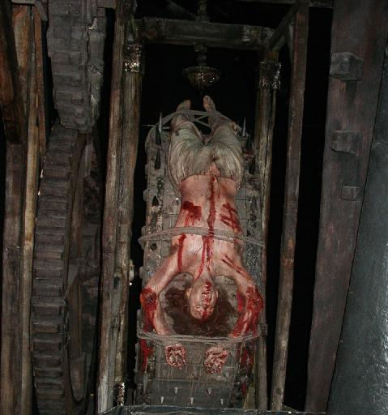
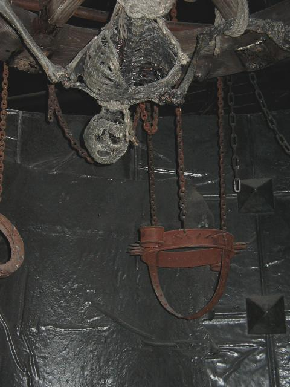
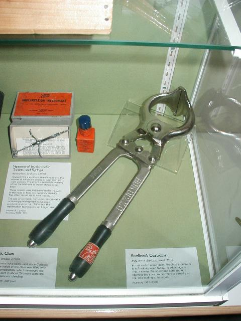

The Morbid Contents Page

The impaling wheel (Wax Museum)

The breaking wheel--the skeleton is on the wrong side so you can see
it. (Wax museum)

Modern castration tool (Science Museum)
Used to crimp the vas deferens and blood vessels supplying the
testicles.